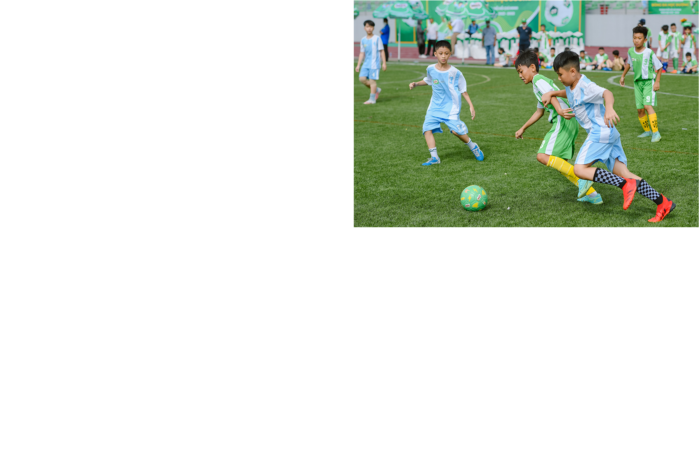
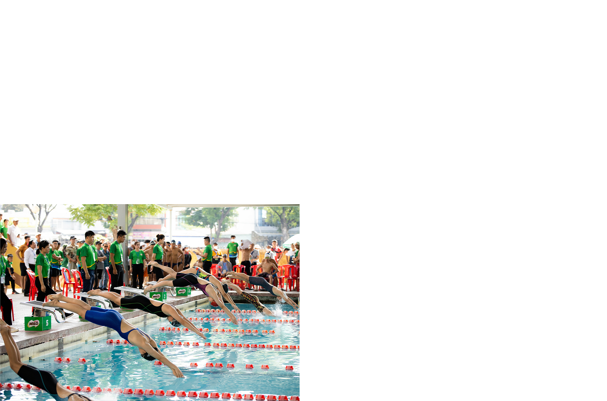
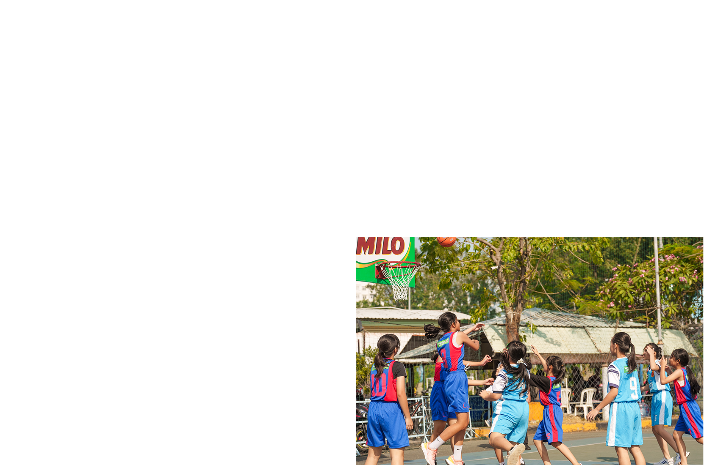
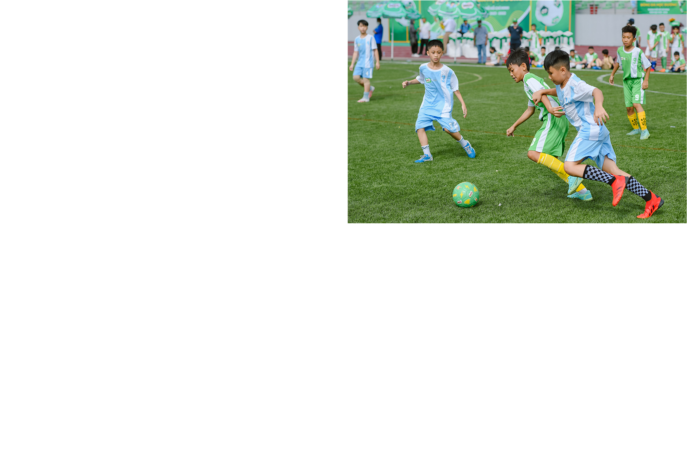
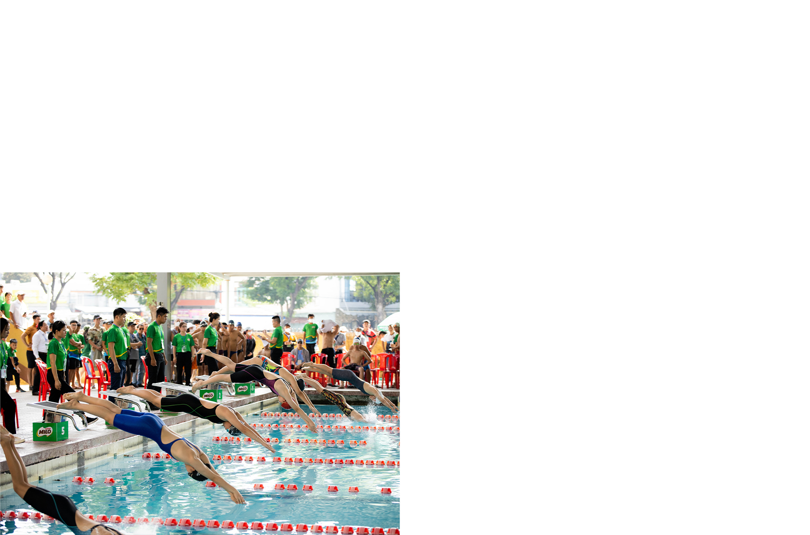
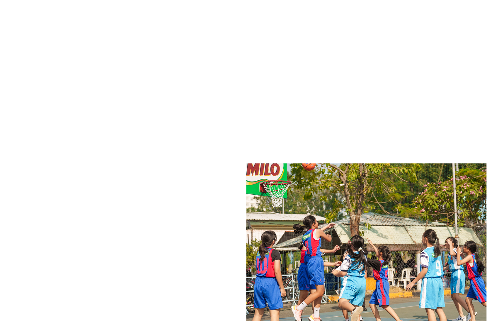

Bà Philomena Tan, Giám đốc ngành hàng Milo và Sữa (Nestlé Việt Nam) cho biết thúc đẩy hoạt động thể chất sẽ giúp thế hệ trẻ Việt xây dựng lối sống năng động, khỏe mạnh khi trưởng thành.

- Ngày hội Đi bộ Milo ở Nghệ An và Ngày Chạy vì sức khỏe toàn dân tại TP HCM trong tháng 3 vừa qua thu hút 16.000 phụ huynh và học sinh tham gia. Bà có chia sẻ gì về các hoạt động này của thương hiệu?
- Đây là những hoạt động mà Nestlé Milo đồng hành cùng Bộ Văn hóa, Thể thao và Du lịch, hướng đến mục tiêu thúc đẩy và khuyến khích phong trào rèn luyện thể dục thể thao vì sức khỏe cộng đồng. Điều này cũng nhất quán với mục tiêu của chuỗi hoạt động mà chúng tôi đã và đang thực hiện, truyền cảm hứng thể thao đến thế hệ trẻ Việt Nam. Chúng tôi tin rằng, việc hình thành thói quen tập luyện thể thao ngay từ khi còn nhỏ sẽ giúp các em tiếp tục duy trì đến khi trưởng thành, để xây dựng một lối sống năng động và khỏe mạnh.
Ngày hội Đi bộ Milo và Ngày Chạy vì sức khỏe toàn dân là hai trong những sự kiện thuộc chương trình Năng Động Việt Nam do Nestlé Milo tổ chức. Đi bộ và chạy bộ là các hình thức tập luyện thể thao cơ bản mà tất cả mọi người đều có thể thực hiện. Thông qua chương trình, chúng tôi mong muốn chung tay cùng các cơ quan ban ngành, tạo ra một hoạt động đơn giản để khuyến khích mọi người đẩy mạnh tăng cường thể chất.
Sau hơn 25 năm hoạt động tại Việt Nam, thương hiệu đã thể hiện sứ mệnh gì với cộng đồng?
- Hơn 25 năm qua, các hoạt động và sân chơi thể thao của chúng tôi đã tiếp cận hơn 2,5 triệu trẻ em trên khắp Việt Nam. Trong đó, Ngày hội Đi bộ Milo tổ chức lần đầu vào năm 2014, đi qua nhiều tỉnh thành như TP HCM, Hà Nội, Bắc Giang, Cần Thơ, Khánh Hòa, và năm nay lần đầu diễn ra tại Nghệ An. Trong khuôn khổ chương trình Năng động Việt Nam, chúng tôi cũng tổ chức nhiều sân chơi thể thao học đường, có thể kể đến các hoạt động như Hội khỏe Phù Đổng toàn quốc phối hợp với Bộ Giáo dục và Đào tạo, Trại hè Năng lượng Nestlé Milo, các giải đấu thể thao học đường như Giải Bóng rổ học sinh TP HCM, Ngày hội Bơi lội, Giải Thể dục Nhịp điệu và Giải Vovinam Việt võ đạo Cúp Nestlé Milo.
Bên cạnh đó, Nestlé Milo đã phát triển chuỗi bài tập trực tuyến cùng với các huấn luyện viên chuyên nghiệp và phiên bản Ngày hội Đi bộ Milo trực tuyến tạo điều kiện tập luyện cho các em nhỏ khi không thể tham gia trực tiếp các sự kiện.
Với những đóng góp cho thể thao học đường và hoạt động văn hóa thể thao thành phố trong nhiều năm qua, Nestlé Milo vừa vinh dự đón nhận bằng khen và kỷ niệm chương từ UBND TP HCM, Sở Văn hóa Thể Thao TP HCM và Liên đoàn Bóng rổ TP HCM. Đối với chúng tôi, được chứng kiến thế hệ trẻ em Việt Nam năng động và khỏe mạnh từ chính thể thao là một phần thưởng vô cùng khích lệ. Chúng tôi đang nỗ lực nhiều hơn nữa để thu hút nhiều trẻ em tham gia phong trào tập luyện thể thao rèn luyện sức khỏe.
 





- Tại Việt Nam, có không ít những hoạt động thể chất tương tự do các nhãn hàng F&B khởi xướng. Theo bà, đâu là dấu ấn riêng biệt trong những nỗ lực của công ty?
- Trước hết, chúng tôi không so sánh mình với các doanh nghiệp khác trên thị trường. Thực tế, chúng tôi cảm thấy vui khi ngày càng có nhiều doanh nghiệp cũng thúc đẩy lối sống năng động từ thói quen tập luyện thể thao, tương tự điều mà Nestlé Milo đang triển khai. Về cơ bản, công ty thể hiện cam kết trong việc thực hiện chiến lược lâu dài, minh chứng là chúng tôi đã mang thể thao tiếp cận đến hàng triệu trẻ em Việt Nam trong suốt hơn 25 năm qua.
Chúng tôi đã tổ chức nhiều hoạt động thể thao học đường cũng như sân chơi linh hoạt ngoài trường học cho trẻ em Việt Nam. Đồng thời, chúng tôi tài trợ cơ sở vật chất, tạo điều kiện cho các em được tham gia tập luyện thể thao, tuy nhiên đó mới chỉ là phần vật chất. Điều quan trọng hơn chính là tác động đến nhận thức của các nhà quản lý giáo dục, các bậc phụ huynh cùng thầy cô giáo về tầm quan trọng của thể thao đối với sự phát triển toàn diện của trẻ nhỏ, từ đó tạo điều kiện cho trẻ tham gia luyện tập thể thao nhiều hơn nữa.
Bên cạnh những lợi ích về mặt thể chất, thể thao còn mang đến nhiều lợi ích khác khi trẻ tham gia tập luyện. Vì thế, chúng tôi dành rất nhiều tâm huyết cho điều này.

"Thông qua thể thao, các em có thể học được những giá trị quý báu như ý chí bền bỉ, lòng kiên trì, sự tự tin, khả năng lãnh đạo cùng tinh thần đồng đội".
- Nestlé Milo đã gặp phải những thách thức nào trong việc thúc đẩy lối sống năng động và tinh thần thể thao tại Việt Nam?
- Các bậc cha mẹ Việt Nam có xu hướng chú trọng nhiều đến kết quả học tập hơn các hoạt động thể lực. Về cơ bản, kết quả học tập là quan trọng, tuy nhiên trẻ sẽ phát triển toàn diện hơn khi đạt được thành tích học tập xuất sắc đồng thời duy trì thói quen tập luyện thể thao. Thể thao giúp các em tăng cường sức khỏe và đồng thời chính từ thể thao, các em có thể đúc kết được nhiều bài học quý giá và cần thiết cho bản thân trên hành trình trưởng thành.
Việc thiếu hụt cơ sở vật chất để tập luyện cũng là một trở ngại khác khi khuyến khích trẻ tập luyện. Để khắc phục khó khăn này, Nestlé Milo tổ chức và tài trợ nhiều hoạt động cũng như sân chơi thể thao nhằm mang đến các lựa chọn đa dạng về loại hình phù hợp cho trẻ. Để giải quyết bài toán cơ sở vật chất, chúng tôi đã trao tặng nhiều thiết bị và dụng cụ thể thao như trụ bóng rổ, khung thành bóng đá... góp phần xây dựng môi trường đủ điều kiện để trẻ tập luyện.
Ngoài ra, phát triển các chuỗi bài tập trực tuyến cùng với các huấn luyện viên chuyên nghiệp hay phiên bản Ngày hội Đi bộ Milo trực tuyến cũng là những nỗ lực giúp các em có thể tiếp cận thể thao mọi lúc mọi nơi. Chúng tôi tin rằng, các bậc phụ huynh sẽ nhận thấy tầm quan trọng của thể thao khi biết đến những tấm gương thành công trong cuộc sống từ những giá trị mà thể thao mang lại.
- Trong 26 năm đồng hành cùng Nestlé, bà đã khởi đầu hành trình tại Nestlé Malaysia, kế đến là Ghana và sau đó chuyển công tác đến Thụy Sĩ. Vậy bà sẽ áp dụng những kinh nghiệm làm việc tại nhiều quốc gia đó khi tới Việt Nam ra sao?
- Tính đến nay, Nestlé Milo đã gia nhập vào thị trường Malaysia hơn 70 năm. Tại đây, thương hiệu cũng triển khai chương trình Năng động Malaysia - Milo Activ Malaysia, tương đồng với chương trình Năng động Việt Nam.
Và tại châu Phi, bóng đá là bộ môn thể thao phổ biến nên Nestlé Milo đã tổ chức nhiều giải đấu bóng đá nhằm thu hút trẻ em tham gia rèn luyện và theo đuổi đam mê. Nestlé Milo đã đồng hành trong hành trình lớn lên cùng thể thao của một số vận động viên châu Phi, cho đến khi họ trở thành cầu thủ bóng đá quốc gia và quốc tế.
Từ hành trình 26 năm gắn bó cùng Nestlé, tôi tin bản thân có thể áp dụng những kinh nghiệm đã có khi làm việc tại các thị trường khác nhau để phát triển hơn nữa Nestlé Milo tại Việt Nam. Tôi cũng cố gắng tìm ra những điểm tương đồng, đồng thời luôn nhận thức rõ ràng về sự khác nhau giữa người tiêu dùng ở các quốc gia khác nhau. Dù vậy, mục tiêu cốt lõi của Nestlé không thay đổi.
"Chúng tôi có những giá trị rất cụ thể,một trong số đó chính là thích ứng với bối cảnh ở những quốc gia mà chúng tôi đang kinh doanh, từ đó vạch ra một kế hoạch phù hợp".
- Đâu là khoảnh khắc bà ấn tượng khi tham gia các hoạt động cộng đồng ở Việt Nam?
- Tôi cảm thấy rất may mắn khi đến Việt Nam đúng lúc để có thể trải nghiệm hai sự kiện tại Nghệ An và TP HCM vừa qua. Tôi được chứng kiến đông đảo trẻ em đến tham dự ngày hội, thấy các em nhỏ cười đùa và cùng nhau tận hưởng bầu không khí thể thao. Đây là những khoảnh khắc hạnh phúc đối với tôi, đồng thời cũng chính là một phần lý do khiến tôi gắn bó lâu dài với Nestlé. Giá trị của công ty tương đồng với các giá trị cá nhân mà tôi hướng đến.
- Chiến lược của Nestlé Milo thời gian tới là gì?
- Chúng tôi vẫn tập trung vào mục tiêu chung của tập đoàn và thúc đẩy lối sống năng động tại Việt Nam. Đây không chỉ dừng ở việc tạo ra những sáng kiến mới mà còn là đảm bảo rằng luôn tập trung vào mục tiêu của Nestlé Milo, vạch ra chiến lược tổng thể để triển khai nhất quán trong nhiều năm và tác động tích cực đến những thế hệ trẻ mai sau. Nestlé Milo sẽ tiếp tục phối hợp cùng các cơ quan ban ngành và các bên liên quan nhằm nâng cao nhận thức và khuyến khích nhiều người tham gia để lan rộng quy mô của các hoạt động thể thao.
Vấn đề còn lại là về mặt dinh dưỡng. Nhìn vào bức tranh dinh dưỡng và ngành hàng sữa tại Việt Nam, cá nhân tôi nghĩ rằng, các thương hiệu khác trên thị trường đang làm tốt vai trò của họ trong việc đảm bảo nguồn dinh dưỡng trong sản phẩm và đồng thời tìm hiểu liệu có còn tình trạng thiếu hụt dinh dưỡng trong chế độ ăn uống của trẻ em Việt Nam hay không. Đó cũng là khía cạnh không thể bỏ qua nếu chúng ta có cơ hội đổi mới và mang đến sáng kiến mới.